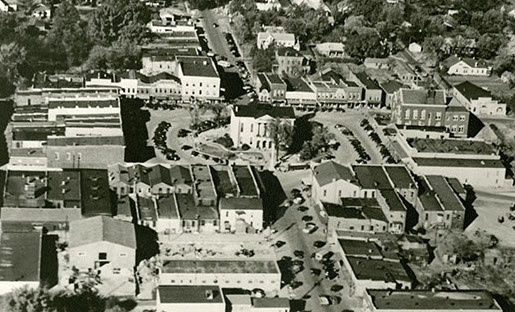

Preface
In William Faulkner’s “Uncle Willy”, the members of the church try to “reform” Uncle Willy Christian, a life-long substance abuser. This lesson will explore some of the underlying reasons for the sudden need to reform Uncle Willy and how this might relate to the town's development and changing perceptions of masculinity and respectability. The module will use the following tools to explore these themes:
By the end of the lesson, students will have considered how changing perceptions of masculinity and propriety might have motivated the late-in-life intervention to which Uncle Willy is subjected.
Tip
This module can be taught by itself or in conjunction with any stories that are part of the Faulkner and modernization cluster:
Activities
1. Uncle Willy’s "Reformers"
“Uncle Willy” provides a window into changing perspectives on middle class masculinity and respectability in the 1930s South from Faulkner's unique and dark perspective. Told from the point of view of an unnamed fourteen-year old narrator, the story follows the attempted "conversion" of Uncle Willy Christian, a lifelong morphine addict and native of the town.
At issue is why the "good", god-fearing women of the town, led by the priggish Mrs. Merridew, suddenly decide to "save" Uncle Willy, even though he has been using morphine for decades. While prescribing narcotics for maintaining an addiction was declared illegal in 1915,1 apparently no legal authority has intervened in Willy's case. Hence, there appears to be no immediate medical or legal urgency to stop Uncle Willy from using morphine in 1931, when the story is set.
An equally important issue is why no one in the town tries to intervene on Willy's behalf, since the efforts to "reform" seem to do more harm than good, and, in the end, they lead to Willy's downfall. The women are allowed to enforce ever more extreme measures to "cure" Willy, even though they have no real authority to do so. They are merely outraged by his behavior.
Looking at the characters involved gives a better sense of the social dynamics at the time and the informal power the church had in controlling people's lives.
1 Musto, David F. The American Disease: Origins of Narcotic Control. 3rd ed., Oxford UP, 1999, p. 121.
Explore: Character Biography
The main map display shows all the locations and characters in the text. The events can be played using the toolbar at the bottom. Each location and character can be filtered down through the options on toolbar on the left side and the locations and characters can all be clicked to provide more information.
- From the Digital Yoknapatawpha homepage, select “Uncle Willy” from the bookshelf.
- Select "Major & Secondary" radio button on the Display Controls
-
Find the following characters:
- “Mrs. Merridew” (
 )
)
- “Unnamed "Good Women in Jefferson"”(
 )
)
- “Reverend Schultz”(
 )
)
- “Unnamed Father of Narrator”()
- “Uncle Willy Christian”()
- “Mrs. Merridew” (
- Click on the icon
- A biography record will pop up in a new window
- Read the description of each character
Respond: The Power of the Pew
Guided Discussion
The character overviews should give a better sense of the social dynamics at play. As a financially independent White male, Willy should be able to do as he pleases, in theory. Yet, Mrs. Merridew and the other "good women" take it upon themselves to "save" him and recruit Reverend Schultz in the effort. This appears to directly contradict gender dynamics in a story like "A Rose for Emily" where men have all the power.
- Is there anything in her background that indicates why Mrs. Merridew should have the power to control Uncle Willy's life?
- Why do the other middle class men, Reverend Schultz or the unnamed narrator's father either go along with the plan or do little to stop it, even if it is harming Uncle Willy?
- What about Uncle Willy makes the "town" condemn his behavior?
- Is Uncle Willy a bad person?
2. Locating Uncle Willy
One of the unanswered questions in the narrative is what causes Mrs. Merridew and the "good women" to set out on their mission to "cure" Uncle Willy in the first place. Looking at locations in the story and how the meaning of those locations changes over time is helpful for thinking about how modernization might create different gender expectations for men.
Explore: Modernization and Locations
The main map display shows all the locations and characters in the text. The events can be played using the toolbar at the bottom. Each location and character can be filtered down through the options on toolbar on the left side. The locations and characters can all be clicked to provide more information.
Even though locations on the map are static, their meaning is dynamic and can change over time. Cycling through the locations gives a better sense of how the town might be changing from the time when Willy was born.
- From the Digital Yoknapatawpha homepage, select “Uncle Willy” from the bookshelf.
- Hover over the map icons to get a sense of the various locations.
-
Find the following locations:
- “Uncle Willy's House” (
 )
)
- “Negro Stores” (
 )
)
- “Drug Store” (
 )
)
- “The Square” (
 )
)
- “Uncle Willy's House” (
- Click on the icon
- A location record will pop up in a new window
- Read the description of the location
Respond: Events
Although a fictional location, the history of Jefferson is similar to that of real Southern towns founded before the Civil War. The heart of the town was usually an administrative center surrounded by a few stores like that of Willy's father. The majority of economic and political power rested with the large plantation estates outside of town. After the Civil War, there is a shift from an agrarian economy to an industrial one, and economic and political power starts to shift towards towns. Simultaneously, the arrival of modern transportation and communication networks meant that Jefferson became more connected to the broader region, especially the more industrial city of Memphis to the north. These changes occur over the course of Willy's lifetime, even as he lives his same drug-addicted life for over six decades.

- Why do you think Willy's father was able to start a store in a good real estate location?
- Why does Willy have more land than most of his neighbors even though is not a savvy businessman?
- The image on the right is an aerial image of the town of Oxford that served as a model for Jefferson. Even though Jefferson is fictional and this picture is from 1949, a period quite a bit after the story takes place, the layout of the square is roughly the same as that in “Uncle Willy”. Willy's drugstore would have been in the northwest (top-left) part of the square. Why do you think the people of the town would have been concerned about his drugstore being there?
- What might be a financial motivation for wanting Uncle Willy to get clean and to install a new shopkeeper?
3. Uncle Willy’s Social World
Even though Willy is relatively isolated, he does have a social life of sorts. One way to understand this social life is by looking at a character-character force directed graph. This shows how often characters interact with one another. While it does not show if that interaction is positive or negative, friendly or formal, it does show who Uncle Willy appears with throughout the text. In a small town like Jefferson, your social interactions could be scrutinized if they seemed abnormal.
Explore: Character Connections
This graph shows how often characters are present or mentioned in the same event. A red line () between two blue boxes () shows at least one interaction, and a thicker line indicates multiple interactions. Characters with more connections are closer to the center, but, importantly, the position of characters are not fixed.
Characters who appear close together in one graph may appear far apart in another. The graph is interactive, so you can click on a character’s name to see their connections. You can also click and drag characters to reposition them.
- Click "Visualization" on the navigation bar at the top of the Digital Yoknapatawpha homepage
- Click Character-Character
- Set Text as “Uncle Willy”
- Set Present/Mentioned as “Present”
- Set Rank as “Primary and Secondary”
- Click Search
Respond: Social Relations
- Who are the characters Uncle Willy occurs with the most and what do they have in common?
- Why might Mrs. Merridew and the "good women" of Jefferson not approve of the company Uncle Willy keeps?
- How might concerns about Uncle Willy's social circle be tied to economic concerns?
- On paper Uncle Willy should have a lot of social prominence in a small Southern town during Jim Crow Era segregation. He is a financially independent White man with roots in the South from before the Civil War. This is a group of men who enjoyed a high social status, why does Willy fall outside the group? Is it just because of his drug addiction?
- White men generally enjoyed the most privilege in the Jim Crow South. Yet, Uncle Willy seems to suggest there were limits to that privilege. What are some implicit rules for being a White man in a modernizing Southern town? What is expected of you as a business owner and a member of the community? Why is it that women, who generally had less privilege, are allowed to force these changes on Uncle Willy?
4. Comparing "Uncle Willy" with "Lion" - Heatmaps
The following part of the lesson compares "Uncle Willy" with "Lion" using heatmaps to consider how masculinity is framed in different contexts.
Broadly, it interrogates how masculinity in the primitive wilderness is different than masculinity in a modern town.
Explore: Comparing Heatmaps
Each story in the main map display can be toggled to "heatmap" mode. In this mode, an overlay shows how often events occur at a particular location. When a location has a relatively high frequency count, the color shading is brighter, while lower frequency events are darker.

Heatmaps are a quick way to see where most of the events take place. This does not necessarily mean that the locations with highest number of events are the most important.
- From the Digital Yoknapatawpha homepage, select “Uncle Willy” from the bookshelf.
- On the Display Controls under Show Events, check the box next to Heatmap
- Compare the heatmaps between "Uncle Willy" and "Lion". To do this, you can open each story in a separate window and toggle the heatmap on for each story.
Respond: Heatmaps
Guided Discussion
Look at the heat maps for “Uncle Willy” and “Lion.” For "Uncle Willy", make a note of the fact that a substantial part of the action happens in or around Memphis. This is visible through the Memphis inset and the events in the region map. Meanwhile, note that in "Lion" there is no inset on the map, meaning that all the action is taking place in the "Big Bottom", hunting grounds to the northwest of town.
- In "Uncle Willy", Memphis becomes a place for him to live out his increasingly debauched lifestyle of drinking and spending time with sex workers. Meanwhile, in "Lion" the men turn to the wilderness to drink and hunt. How do these different social spaces suggest what is and what is not appropriate for modern men?
- Both stories seem to "escape" small town Jefferson. Why do you think small town respectability could also be constraining for men?
5. Comparing “Uncle Willy” and “Lion” - Character Demographics
Although a very much outmoded way of thinking now, Faulkner's Yoknapatawpha County can be broken down into five distinct racial groups:
- White () - The largest social group
- Black (

 ) - The second largest social group
) - The second largest social group - Native Americans (

 ) - A much smaller group
) - A much smaller group - Mixed Race (


 )- An even smaller group, consisting of characters
like Boon Hogganbeck who have ancestry from different racial groups
)- An even smaller group, consisting of characters
like Boon Hogganbeck who have ancestry from different racial groups - Asian (
 ) - Very rare mentions only
) - Very rare mentions only
Digital Yoknapatawpha made the conscious decision to represent Faulkner's racial groups through very distinct icons to capture his vision, even if it might make modern readers uncomfortable.
As his fiction takes place between the early 19th century and the middle of the twentieth century many of his stories are either explicitly or implicitly about the relationship between White and Black currents during enslavement and, later, segregation in the Jim Crow South. Faulkner views these relationships largely from a White male perspective. Indeed, the overwhelming majority of events in the fiction feature White men. Nevertheless, he is interested in creating situations in his fictions in which characters cross the "color line", and transgress the rigid racial hierarchy of the segregated South. These tensions are often visible in the demographics of his stories.
Explore: Character Demographics
The main map display shows all the locations and characters in the text. The events can be played using the toolbar at the bottom. Each location and character can be filtered down through the options on toolbar on the left side and the locations and characters can all be clicked to provide more information.
- From the Digital Yoknapatawpha homepage, select “Uncle Willy” from the bookshelf.
- Select "All" radio button on the Display Controls
- Make note of the different kinds of characters based on their race, gender, and the ratio of White male characters to other types of characters.
- Repeat this process for “Lion”
Respond: Race and Space
Guided Discussion
One of the most immediately noticeable differences between the two stories is that "Lion" is far more diverse in terms of the different races present. What is more, White people, while still a majority in "Lion" are far less dominant than in "Uncle Willy", which is almost entirely White.
Less quickly visible is the gender ratio. There are virtually no women present in "Lion." Meanwhile, there are far more women in "Uncle Willy". They are, after all, the ones who give him so much grief.
- Why is "Lion" so much more racially diverse than "Uncle Willy"? How might this relate to the setting and the action in the story?
- What does it say about Uncle Willy that in a majority White story he is close to the Black characters?
- Why are there so many more women in "Uncle Willy" than in "Lion"?
- Where do men seem happiest in these stories? What does that say about Faulkner's notion of masculinity?
- For Faulkner, is the "modernization" of men into prudent, middle-class, professional members of a town positive? Or does he see modernization as detrimental to masculinity?
Final Product
The cluster of lessons about gender and modernization includes:
While each story had its own unique themes, in all of them characters were confronted with changing social norms due to modernization. Elly tried to be the adventurous “New Woman”. Emily tried to stick to tradition after the Civil War and ended up alone. The church women of Jefferson tried to make Uncle Willy more respectable. Meanwhile, the death of Old Ben and Lion symbolize the death of untouched nature, a space outside of the civilized world where the men of Jefferson could go to reconnect with each other and themselves.
For all their similarities about changing social roles, these stories are also different in their outcomes. Although none end happily, some end worse than others. Likewise, the characters inhabit different spaces and represent different generations. Plotting these positions on a cluster chart can help us discover the politics of a text. Here politics does not mean a specific political party, but rather the form of social organization the stories see as positive and negative.
A bi-axial (two axes) cluster chart tries to visualize these positions. Arguably, you could use any two categories to make a chart like this. A common one is one that frames politics as a choice between more or less economic regulation and more or less social regulation by the government.
To help map out these stories, the two oppositional axes are “Nature vs. Modernization” and “Traditional vs. non-Traditional Gender Roles”. In the case of the former, characters are plotted from left to right based on whether they seem to prefer nature or the way of life modernization provides. The Y-axis opposes traditional vs. non-traditional gender roles. Traditional gender roles in these stories are characters who marry and have children or think it is important for others to do so. Non-traditional gender roles is any character who does not do what society expects of men and women.
- Drag each character from the Character Bank into the quadrant that best represents their relationship to nature vs. modernization and traditional vs. non-traditional gender roles.
- Double-click a placed character to return it to the bank.
- Click Save as Image to download your completed chart.
- Compare your chart with a classmate, group, or post it on a discussion board.
Non-Traditional Gender Roles
Non-Traditional Gender Roles
Traditional Gender Roles
Traditional Gender Roles
- Why did you organize the chart in the way you did?
- Is there any particular character who stands out as not being like the others?
- Does this character fare better than the other characters?
- What kinds of characters tend to have the worst end?
- If we assume that characters who end badly represent a certain limit to what is possible in a society, what are the politics of Yoknapatawpha? Does it promote modernization and non-traditional gender roles or is it better to maintain traditional gender roles and be skeptical of modernization?
- Generally, do men or women fare better or do both suffer bad fates equally?
- Is it more difficult for male or female characters to adapt to shifting gender roles in the face of a rapidly modernizing world?